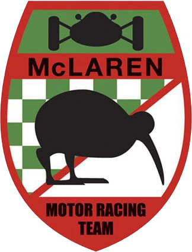

Bruce Mclaren cria a Mclaren
Porém sua estréia foi apenas no GP de Mônaco em 1966.


Ayrton Senna
"Eu não estou projetado para ser segundo ou terceiro, eu projetei para ganhar."
Ayrton Senna da Silva foi um piloto brasileiro de Fórmula 1, sendo campeão da categoria três vezes (1988, 1990 e 1991). Em 1988, juntou-se ao francês Alain Prost na McLaren-Honda, com o qual teve grande rivalidade.
Sua morte, assim como o funeral e velório, provocou uma das maiores comoções da história do Brasil, bem como repercussão mundial. No auge de sua carreira, era considerado o maior ídolo brasileiro, posto que mantém mesmo depois de quase três décadas após a sua morte.
Uma ascensão estelar nas classificações de kart, seguida por um excelente primeiro par de temporadas em campeonatos juniores de monopostos colocaram Lando Norris firmemente no mapa do automobilismo.
Um karter talentoso, ele continua sendo o piloto mais jovem a estabelecer uma pole position em um encontro nacional, ganhou o Super One Series’ ‘O’ Plate em 2010, então em 2012 ele se tornou campeão da Fórmula Kart Stars e vice-campeão no MSA Super One Campeonato Britânico.
LN
04
A jornada do automobilismo de Daniel Ricciardo começou, como tantos, colado a uma televisão. No caso dele, isso geralmente era uma indulgência noturna, assistindo à Fórmula 1, NASCAR e todas as formas de automobilismo em casa em Perth, Austrália Ocidental. Picado pelo bichinho, começou no kart aos nove anos e aos 15 passou para a Fórmula Ford.
Com um carro tão velho quanto ele, os resultados de Daniel não foram espetaculares, mas ele chamou a atenção e ganhou uma bolsa de estudos para a Fórmula BMW Ásia 2006, onde , em sua temporada de estreia, conquistou duas vitórias e uma pole position, terminando o ano em terceiro lugar.
DR
03